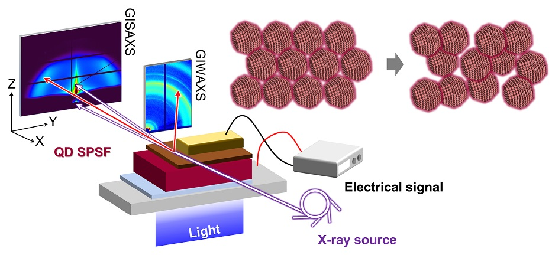
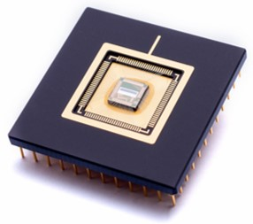
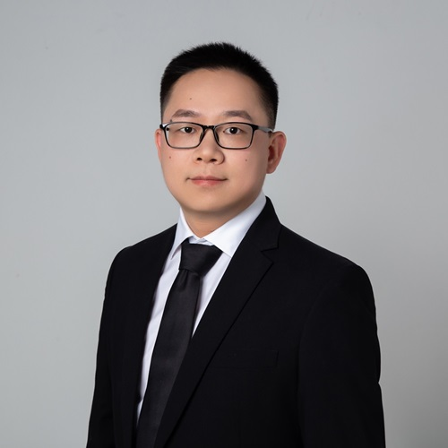

Wei Chen 陈威
Assistant Professor, College of Engineering Physics, Shenzhen Technology University (SZTU) 深圳技术大学
PI of Photonics Energy & thinfilm X-ray scattering Lab
Lantian Road 3002, Pingshan, 518118 Shenzhen, China
E-mail: chenwei@sztu.edu.cn
Visiting Scholar, College of Engineering, Southern University of Science and Technology (SUSTech) 南方科技大学

[1] Nano & angstrom leveled structure characterizations via grazing-incidence X-ray scattering (GIXS) and modeling of thinfilms, such as colloidal quantum dots (CQDs), polymers, perovskites
[2] Structral disorder correlated charge carrier dynamics in CQD solid films
[3] Degradation mechnism of solution-processed semiconductor thinfilms via GIXS [National Natural Science Fundation of China (NSFC), 2023-2025]

[4] Nanocrystal thin film and IC integrations towards high resolution (<2 um) imaging technique [Industrial Project, 2022-2024]
© Copyright 2022, Wei Chen @ SZTU

Wei Chen is a condensed matter physicist and the PI of Photonics Energy & X-ray scattering Lab at SZTU. Wei received degrees in physics and materials science from Hubei Engineering University (B.Sc.), Hubei University (M.Sc.), and Technical University of Munich (TUM, Germany, Ph.D.) respectively. Before the PhD study, Wei had spent three years as a research assistant at SUSTech.
Along with the PhD experience under the supervision of Prof. Peter Müller-Buschbaum, Wei has promoted the study of the structure-performance relation of solution-processed semiconductor thin films (SPSFs) via grazing-incidence X-ray scattering (GIXS). On this basis, Wei is presently also interested in developing industrial-leveled photodetector applications based on thin films and has already established broad collaborations in both academics and industries.
Besides, Wei is into both physical sports, like football, and e-sports, such as DotA2. He joined the [SUNLIGHT] football team of SUSTech in 2021 and the team has participated in industrial football leagues in Greater Bay Area. In 2022, Wei built up [GZS Gaming Team] which has rampaged several times on the Steam platform so far.